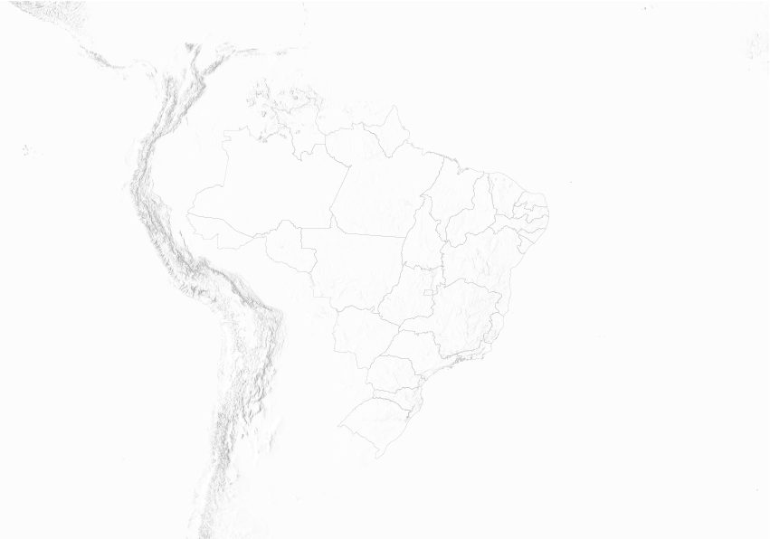
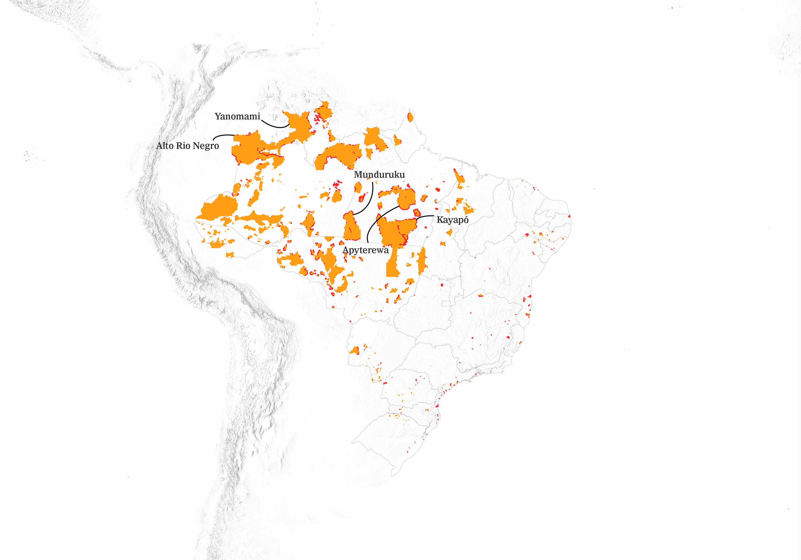
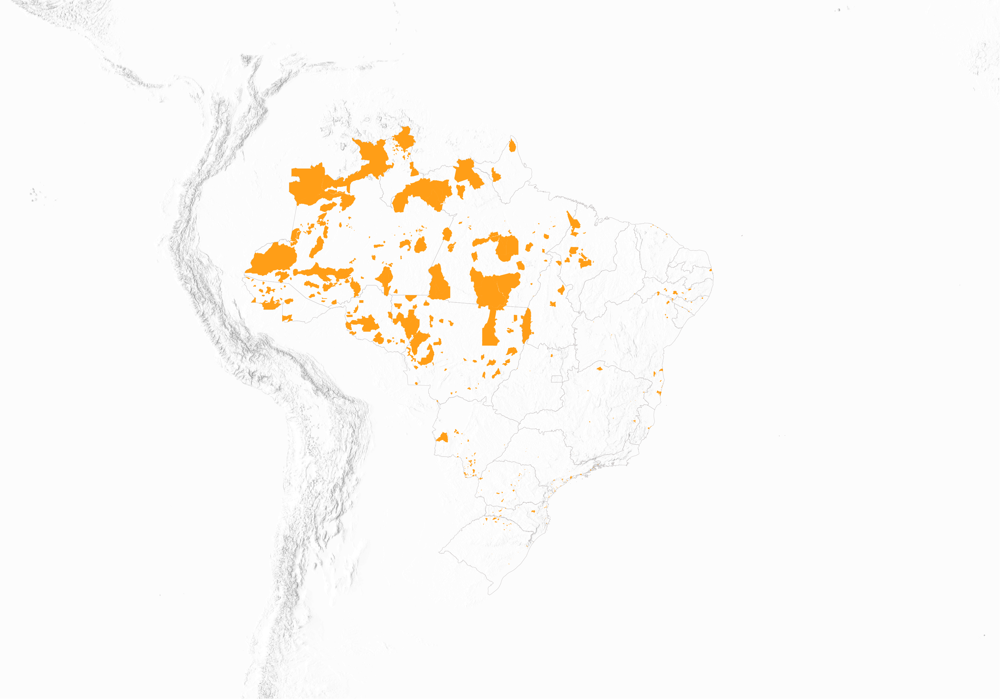
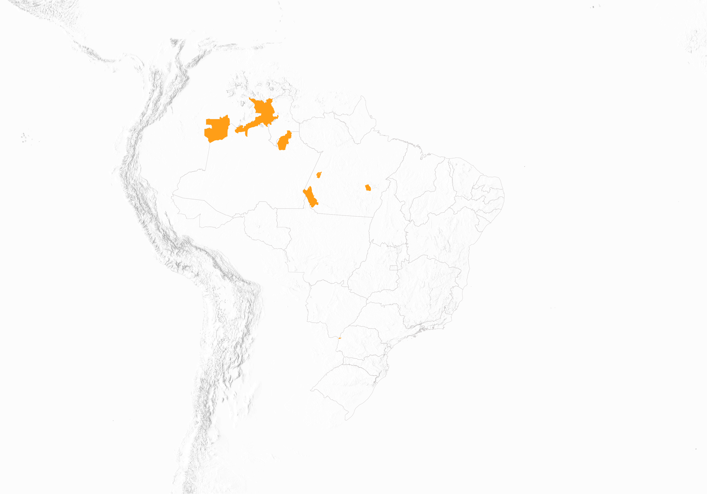
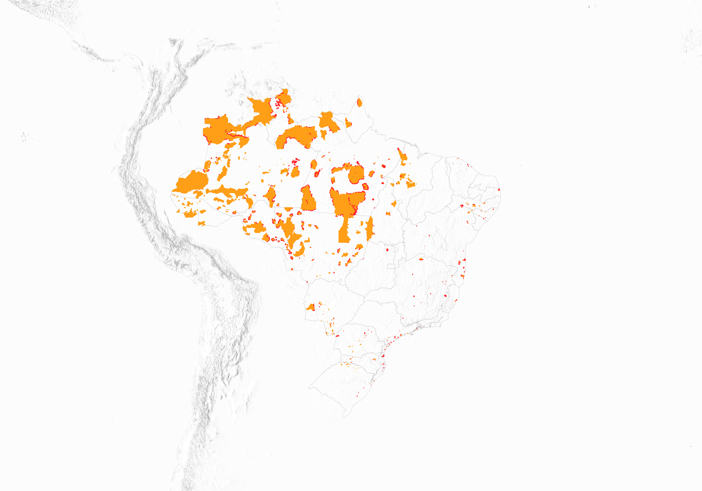
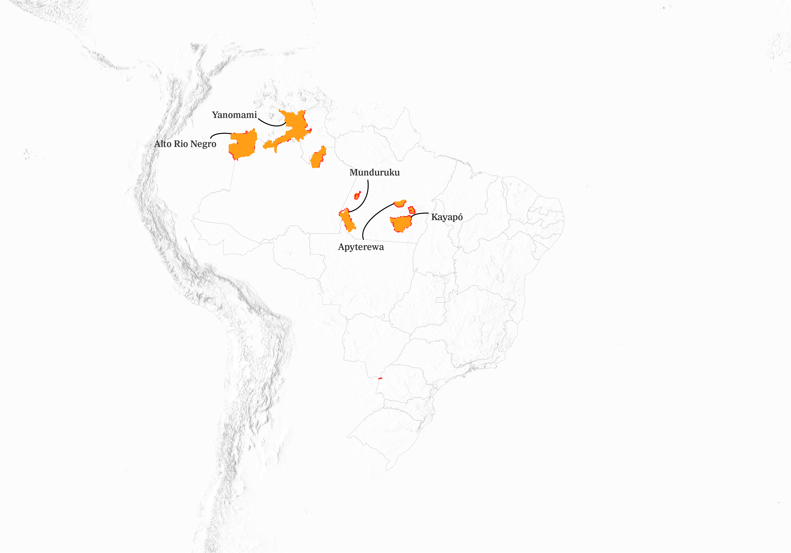
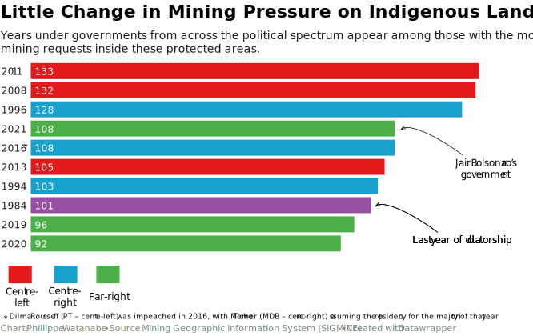

Pushing for Mining Within Indigenous Lands in Brazil
Indigenous territories are legally protected, yet mining companies
continue to pursue access.
By Phillippe Watanabe
In Brazil's Indigenous lands, danger lurks outside the forest. While Indigenous communities coexist
with and respect nature, companies and non-Indigenous individuals attempt to register areas within these
protected zones for mining."






In Brazil, Indigenous peoples' rights—including their land rights—were officially recognized
in the 1988 Constitution.
Brazil has 638 Indigenous lands, according to data from Funai (National Indigenous Foundation). Most
are already regularized (490), while the remainder are at various stages of the regularization process.
Data from Brazil's National Mining Agency (ANM) shows that between 1941 and 2025, there were 2,633 requests
to open mining operations within Indigenous lands.
Some Indigenous lands face greater pressure from mining requests. The Kayapó territory has 115
registered mining processes. Other areas known for mining conflicts include the Munduruku (72 processes)
and Apyterewa (56).
The push for gold in the Amazon—and within Indigenous lands—is not new in Brazil.
In the late 1980s and early 1990s, gold miners swarmed Yanomami land in Roraima.
It wasn't until 1992 that the territory was officially demarcated as Indigenous.
But that wasn't enough to prevent what was later known as the Haximu massacre,
when a group of illegal gold miners killed 16 Yanomami people.
The demarcation helped reduce the presence of intruders, but in recent years,
illegal mining has worsened once again.
Ibama disables illegal mining equipment in Munduruku Indigenous Land, in Pará
However, setting aside the issue of illegal mining within protected areas, this analysis focuses on
companies and individuals who are legally attempting to mine within Indigenous lands across Brazil. These
legal requests can be seen as a form of pressure to legitimize the idea that mining in these territories
should be allowed—despite the fact that the Brazilian Constitution currently prohibits it.
To be legally authorized to explore mineral resources in Brazil, individuals or companies must register the
exact coordinates of the area they intend to explore. This analysis cross-referenced those registered coordinates,
made available through SIGMINE (the Mining Geographic Information System), with the official boundaries of
Indigenous lands, as defined by Funai
And contrary to what one might expect, the situation doesn't appear to be improving—recent years dominate the
ranking of mining requests. The analysis shows that nearly 50% of all processes were initiated after 2010.
Interestingly, three of the four years during Jair Bolsonaro's presidency rank among those with the highest
number of mining requests inside Indigenous lands. Throughout his time in office, Bolsonaro openly championed
the economic exploitation of these protected territories.

Generally, the first step to begin mining is submitting a Permit Application. This is also the most common type
of request within Indigenous lands in the ANM dataset, accounting for 1,277 processes.
There are also a significant number of processes in later stages, such as exploration permits (587). This second
stage involves granting mineral rights to carry out activities like defining the mineral deposit, evaluating it,
and determining the feasibility of economic extraction. In other words, mineral exploration may already
be underway.
Additionally, there are 294 processes related to mining permit applications, representing an even more advanced
stage in the mining approval process.
While this analysis isn't limited to gold mining—since companies and individuals are seeking to exploit numerous
other minerals within Indigenous lands—gold remains the primary focus for those lurking near these protected areas.
Gold is the
main driver behind company requests to mine within Indigenous territories
Most gold exploration
requests are concentrated in Amazonian states like Pará,
Amazonas, Roraima, and Mato Grosso.
Today, the Indigenous peoples most affected by mining pressure are the Kayapó (with 345 processes registered
within their territories —not all Kayapó live in the Kayapó land), the Munduruku, the Guarani Mbya, the Mura, and
the Yanomami.
"Extractive industry activities, in particular mining, oil and gas, and logging projects,
have long constituted 'the most pervasive source of the challenges to the full exercise of [indigenous peoples']
rights", as highlighted by he United Nations'
"State of the World's Indigenous Peoples".